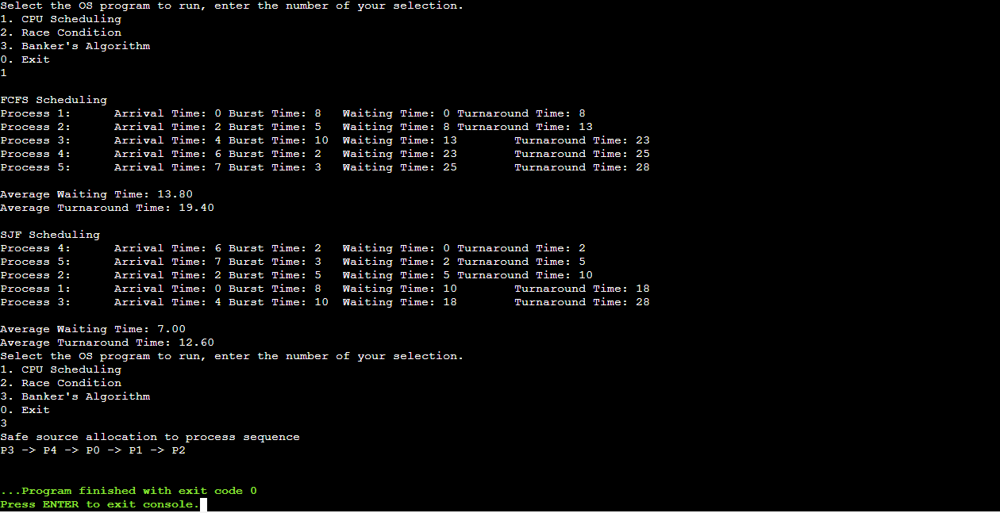

Project Description
This project is a comprehensive C program that simulates various operating system management algorithms, including First In First Out (FIFO) scheduling and Banker's Algorithm for resource allocation. The program is designed to handle multiple processes and manage resources efficiently while avoiding deadlocks.
Features
- Implementation of FIFO scheduling algorithm to manage process execution order.
- Simulation of resource allocation using Banker's Algorithm to ensure system safety and avoid deadlocks.
- Dynamic handling of multiple processes with varying resource needs.
- Detailed output displaying process states, resource allocation, and system status.
Technologies Used
- C programming language for system-level programming.
- Standard libraries for input/output and memory management.
- Data structures such as arrays and structs to manage processes and resources.
Challenges and Solutions
One of the main challenges was implementing the Banker's Algorithm correctly to ensure that the system remains in a safe state. This required careful tracking of resource allocation and process needs. The solution involved creating functions to check system safety and manage resource requests dynamically.
Skills Learned
- In-depth understanding of operating system concepts such as process scheduling and resource management.
- Proficiency in C programming, including memory management and pointer manipulation.
- Problem-solving skills in designing algorithms to handle complex scenarios like deadlock avoidance.
- Experience in debugging and testing system-level code to ensure reliability and correctness.
Conclusion
This C programming project provides a robust simulation of operating system management techniques, enhancing understanding of critical concepts in process scheduling and resource allocation. The implementation of FIFO and Banker's Algorithm demonstrates effective strategies for managing system resources while ensuring stability and efficiency.